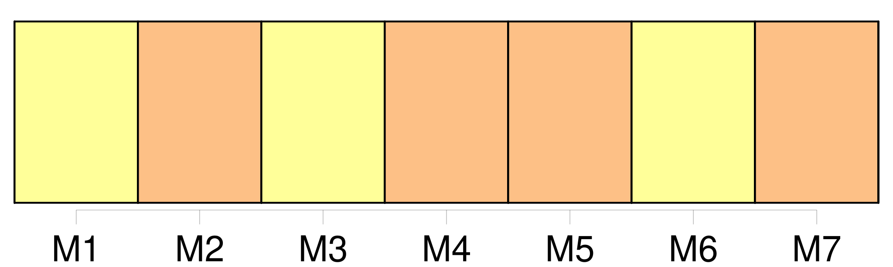
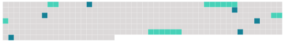

Longueur nb maillons : 10 mentions |
 |
Une semaine en Bretagne [Ils] sont rentrés, fatigués par le long voyage en train mais heureux et tout bronzés par le soleil breton.
[Les 28 élèves du cours moyen] ont passé une semaine « verte » à Le Pouliguen, près de la Baule, en compagnie du directeur Philippe Ducret, des parents accompagnateurs Christiane, Françoise, Nadia, Patrick et des deux aides-éducatrices Anne et Karima. Au centre d'accueil de Le Pouliguen, [ils] étaient attendus par Maryline, animatrice, qui tout au long de la semaine, [leur] a permis de découvrir la région. [1 phrases]
Mercredi [les petits Lorrains] ont découvert le monde de la pêche, les bateaux, les techniques, la filière pêche, avec la visite du port de la Turballe et de celui du Croisic. La région de la Baule est également le paradis des oiseaux qu' [ils] ont approchés avec un ornithologue avant de tout apprendre, jeudi après-midi, sur les marais salants de Saint-Molf. [2 phrases]
Ce voyage aura une suite puisque [les élèves des CM1 et CM2] travaillent sur les nombreux documents, photos, diapositives qu' [ils] ont rapporté de leur semaine bretonne et qu' [ils] présenteront, lors d'une soirée ouverte à tous, avant la fin de l'année scolaire. |
 |
Il est possible de télécharger la ressource sur la page Ortolang |
Si vous avez des questions ou vous voyez des erreurs, merci d'envoyer un mail à silvia.federzoni89@gmail.com |